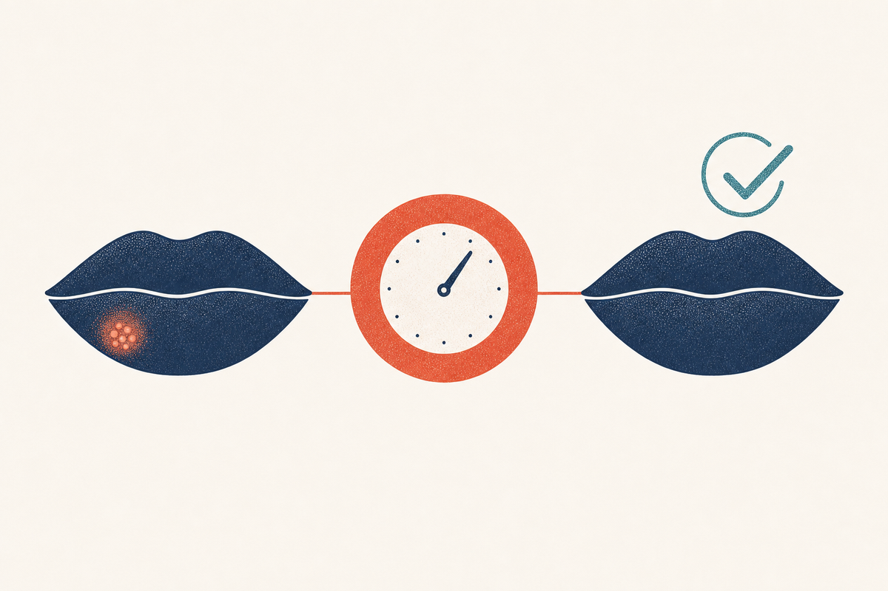

Key Takeaways
- The single most important factor in how fast a cold sore heals is how early treatment starts; the tingle is the moment to act.[1][3]
- Oral antivirals are the fastest and most effective option. Valacyclovir and famciclovir offer one-day or single-dose convenience.[4][2]
- Over-the-counter topicals such as docosanol cut only about half a day to a day off healing and do not reduce shedding.[5][7][8]
- Home care, cool compresses, petroleum jelly, rest, and sun protection, supports healing but does not cure the sore faster on its own.[12][13]
- Avoid picking, popping, drying ingredients, and sun exposure, all of which can prolong or worsen an outbreak.[12][9]
- For a fast response through telehealth, the same-day oral antiviral prescription is the practical core of the strategy.[1][4]

The First 24 Hours: The Window That Matters
Nearly everything about how fast a cold sore resolves is decided in the first day, often in the first few hours. Herpes simplex virus multiplies most rapidly right after it reactivates, and antiviral drugs work by stopping that multiplication. Catch the virus early and the outbreak never reaches its full size; wait and it has already built the blister you then have to heal.[1][3]
The most reliable early warning is the prodrome: a tingle, itch, or burn in a spot where you have had a sore before. If you are prone to cold sores, learn to recognize that feeling, and act on it immediately. The valacyclovir trials found the greatest benefit when treatment started during the prodrome or at the earliest visible bump, with shorter episodes and faster healing and pain relief.[1]
This is why speed, not elaborate treatment, is the real weapon. Many people lose a day convincing themselves the tingle is nothing. By the time the blister appears, the best moment has passed, though treatment is still worthwhile.[3][12]
Oral Antivirals: The Fastest Option
Three oral antivirals are the workhorses for fast cold sore treatment, and all three work better the earlier they are started.
- Valacyclovir: The FDA-approved cold sore regimen is a single day of treatment, 2 grams taken twice, 12 hours apart.[4] Started early, it shortens the episode by roughly a day and speeds healing and pain relief.[1]
- Famciclovir: A single patient-initiated dose of 1,500 mg reduced median healing time to about 4.4 days versus 6.2 days for placebo, nearly two days saved.[2]
- Acyclovir: A five-day course (typically 400 mg five times daily) shortens healing by about one to two days but requires more frequent dosing.[3]
| Drug | Fast regimen | Doses | Approx. savings |
|---|---|---|---|
| Valacyclovir | 2 g twice, 12 hours apart[4] | 2 in one day | ~1 day[1] |
| Famciclovir | 1,500 mg once[2] | 1 | ~1 to 2 days[2] |
| Acyclovir | 400 mg five times daily for 5 days[3] | 25 over 5 days | ~1 to 2 days[3] |
Because valacyclovir and famciclovir require only a couple of doses, they fit naturally into a same-day telehealth visit. A clinician can confirm the likely diagnosis and send a prescription within the treatment window, which is why telehealth is such a good fit for this particular problem.[1][4] See our dedicated valacyclovir guide for dosing detail, safety, and comparisons.
Topical Antivirals: Honest Limits
If you have only an over-the-counter cream on hand, it can help a little, but it is worth being clear about what topicals can and cannot do. Docosanol 10% cream (Abreva) shortened healing by about 18 hours in its pivotal trial, roughly 4.1 versus 4.8 days.[5] Prescription penciclovir 1% cream performed similarly, about half a day to a day of benefit.[6]
Across the literature, topical antivirals are consistently less effective than oral antivirals, and they do not meaningfully reduce viral shedding, so they should not be treated as a way to protect a partner.[3][8][7] A combination topical, acyclovir 5% with hydrocortisone 1%, adds an anti-inflammatory effect and reduces progression to ulcerated lesions, and a systematic review found that adding a topical corticosteroid to an antiviral can modestly improve outcomes.[11][10]
There is a real and underappreciated consumer lesson here. The oral antivirals that actually shorten a cold sore are prescription-only, while the products available over the counter on the pharmacy shelf offer only marginal benefit. If a fast result is the goal, the prescription route is the stronger one.[8][3]
Home Care That Actually Helps
Home care will not cure a cold sore faster on its own, but it keeps the sore comfortable, prevents cracking and secondary infection, and supports the body's own healing. The measures with real value are:
- Cool, damp compresses applied for short periods to reduce pain and swelling.[12]
- Petroleum jelly or plain lip balm to keep the sore and the healing scab moist and prevent cracking.[12][13]
- Pain relief with an over-the-counter oral analgesic such as acetaminophen or ibuprofen if the sore is painful.[12]
- Sun protection on the lips (SPF 30 or higher), because sun slows healing and is the best-studied trigger for recurrence.[9]
- Rest and stress reduction, since stress is a recognized trigger and poor sleep is associated with recurrence.[12][13]
Routine handwashing and avoiding touching the sore reduce the chance of spreading the virus to your own eyes or fingers, or to someone else.[14]
What Slows Healing (and Worsens the Sore)
Just as important as what you do is what you stop doing. The common mistakes that prolong a cold sore include:
- Popping or picking the blister or scab: this does not speed healing, spreads the virus, and invites bacterial infection.[12][13]
- Harsh or drying remedies: rubbing alcohol, toothpaste, and astringents irritate the skin and can slow healing; there is no evidence they help.[12]
- Sun and tanning exposure during an active sore, which can prolong healing.[9][13]
- Delaying treatment while waiting to see whether the tingle "becomes anything," which forfeits the most effective window.[1]
- Sharing lip products or kissing during the episode, which poses no benefit and only risks spreading the virus.[14][12]
If you want the shortest possible episode, the pattern that works is simple: treat early, protect the skin, and avoid the irritants above.
| Do | Don't |
|---|---|
| Start a prescribed oral antiviral at the first tingle[1] | Wait to see whether the tingle "becomes anything" |
| Keep the sore moist with petroleum jelly[12] | Apply toothpaste, alcohol, or harsh astringents[12] |
| Use lip sunscreen outdoors[9] | Pick, pop, or peel blisters and scabs[13] |
| Wash hands after touching the sore[14] | Kiss or share lip items while contagious |
A Step-by-Step Protocol
| Moment | Action | Why |
|---|---|---|
| First tingle | Take your prescribed oral antiviral, or request a same-day telehealth visit[1] | The prodrome is when antivirals work best |
| Blister appears | Keep clean and dry; apply cool compress; wash hands after touching[12] | Limit spread and discomfort |
| Weeping stage | Apply petroleum jelly to raw skin; avoid picking[12] | Prevent cracking and infection |
| Crusting stage | Keep scab moist; use lip sunscreen if outdoors[9][13] | Speed natural re-epithelialization |
| Healing stage | Continue SPF lip balm; watch for any signs of spreading infection[13] | Protect new skin; catch complications early |
This protocol does not require many products. The moment with the highest return is the first one, and everything after it is support while the body finishes the job.
When Home Care Isn't Enough
Most cold sores resolve with the approach above, but some situations call for a clinician. Seek care if the sore has not healed within about two weeks, if it is unusually large or painful, if it keeps coming back frequently enough to disrupt your life, or if you have a weakened immune system or active eczema.[12][14][9] Eye pain, redness, or vision change, or a sore spreading widely across the face, warrants urgent same-day evaluation.[12]
A clinician can also help people with frequent recurrences consider daily suppressive therapy, which prevents outbreaks before they start, a better strategy than repeatedly fighting each episode after the fact.[9] See our main cold sore guide for the full prevention and suppression discussion.
Frequently Asked Questions
There is no evidence toothpaste helps, and its ingredients can irritate the skin and slow healing. It is better to use a plain moisturizer or petroleum jelly.[12]
A brief cool compress can reduce pain and swelling, but it does not shorten the infection. It is a comfort measure, not a treatment.[12]
Yes. Sun is the best-documented trigger for cold sores and can slow healing of an active one. Lip sunscreen with SPF is a proven preventive.[9]
References
- Spruance SL, Jones TM, Blatter MM, Vargas-Cortes M, Barber J, Hill J, et al. High-dose, short-duration, early valacyclovir therapy for episodic treatment of cold sores: results of two randomized, placebo-controlled, multicenter studies Antimicrobial Agents and Chemotherapy. 2003;47(3):1072-1080.. doi:10.1128/AAC.47.3.1072-1080.2003
- Spruance SL, Bodsworth N, Resnick H, Conant M, Oeuvray C, Gao J, et al. Single-dose, patient-initiated famciclovir: a randomized, double-blind, placebo-controlled trial for episodic treatment of herpes labialis Journal of the American Academy of Dermatology. 2006;55(1):47-53.. doi:10.1016/j.jaad.2006.02.031
- Cernik C, Gallina K, Brodell RT. The treatment of herpes simplex infections: an evidence-based review Archives of Internal Medicine. 2008;168(11):1137-1144.. doi:10.1001/archinte.168.11.1137
- U.S. Food and Drug Administration. VALTREX (valacyclovir hydrochloride) prescribing information FDA.. FDA Valtrex label
- Sacks SL, Thisted RA, Jones TM, Barbarash RA, Mikolich DJ, Ruoff GE, et al. Clinical efficacy of topical docosanol 10% cream for herpes simplex labialis: a multicenter, randomized, placebo-controlled trial Journal of the American Academy of Dermatology. 2001;45(2):222-230.. doi:10.1067/mjd.2001.116215
- Spruance SL, Rea TL, Thoming C, Tucker R, Saltzman R, Boon R. Penciclovir cream for the treatment of herpes simplex labialis. A randomized, multicenter, double-blind, placebo-controlled trial JAMA. 1997;277(17):1374-1379.. PMID 9134943
- Mancini A, Inchingolo AM, Marinelli G, Trilli I, Sardano R, Pezzolla C, et al. Topical and systemic therapeutic approaches in the treatment of oral herpes simplex virus infection: a systematic review International Journal of Molecular Sciences. 2025;26(17):8490.. doi:10.3390/ijms26178490
- Koe KH, Veettil SK, Maharajan MK, Syeed MS, Nair AB, Gopinath D. Comparative efficacy of antiviral agents for prevention and management of herpes labialis: a systematic review and network meta-analysis Journal of Evidence-Based Dental Practice. 2023;23(1):101778.. doi:10.1016/j.jebdp.2022.101778
- Chi CC, Wang SH, Delamere FM, Wojnarowska F, Peters MC, Kanjirath PP. Interventions for prevention of herpes simplex labialis (cold sores on the lips) Cochrane Database of Systematic Reviews. 2015;(8):CD010095.. doi:10.1002/14651858.CD010095.pub2
- Arain N, Paravastu SC, Arain MA. Effectiveness of topical corticosteroids in addition to antiviral therapy in the management of recurrent herpes labialis: a systematic review and meta-analysis BMC Infectious Diseases. 2015;15:82.. doi:10.1186/s12879-015-0824-0
- Hull CM, Levin MJ, Tyring SK, Spruance SL. Novel composite efficacy measure to demonstrate the rationale and efficacy of combination antiviral-anti-inflammatory treatment for recurrent herpes simplex labialis Antimicrobial Agents and Chemotherapy. 2014;58(3):1273-1278.. doi:10.1128/AAC.02150-13
- Opstelten W, Neven AK, Eekhof J. Treatment and prevention of herpes labialis Canadian Family Physician. 2008;54(12):1683-1687.. PMID 19074705
- Leung AKC, Barankin B. Herpes labialis: an update Recent Patents on Inflammation & Allergy Drug Discovery. 2017;11(2):107-113.. doi:10.2174/1872213X11666171003151717
- Centers for Disease Control and Prevention. Herpes: STI treatment guidelines, 2021 CDC Division of STD Prevention.. cdc.gov herpes treatment guidelines